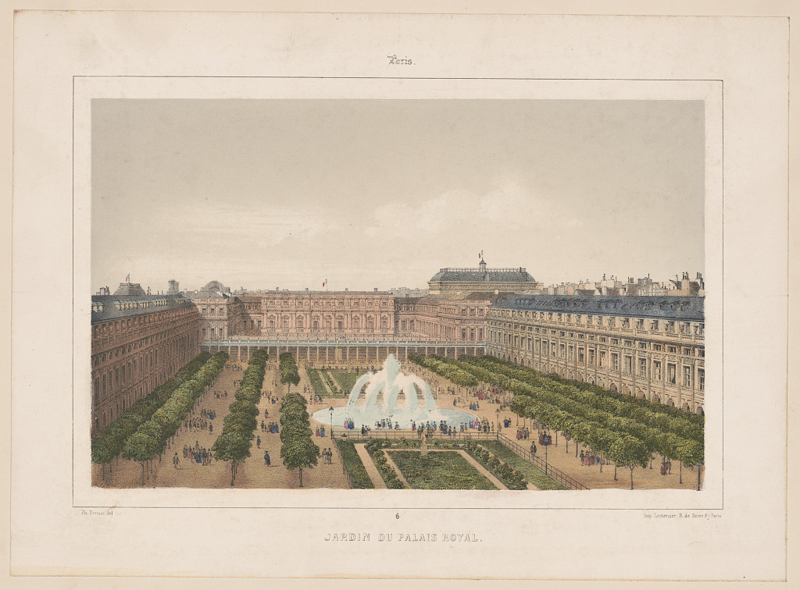

Атлас
времени
Путешествовать по городам можно не выходя из их прошлого. Литографии Бенуа, гравюры и городские альбомы. От XVII века до сегодняшнего дня: архитектура, улицы, рынки, мода и люди, которых уже нет на фотографиях.
Настоящие музейные источники. Без вымышленных ракурсов и приписанных авторам работ.


Из музейных собраний
Дополняем Бенуа другими мастерами городской графики. Эти четыре изображения принадлежат открытому фонду Cleveland Museum of Art. Их можно изучать и использовать с указанием источника.


Полные версии, история работ и проверяемые ссылки доступны в карточках коллекции. Для изображений из внешнего музея нужен доступ к интернету.
Листы, места, эпохи
В центре XIX век и литографии. Гравюры XVII–XVIII веков дают глубину, а фотографии XX–XXI веков продолжают историю. Сначала выбирайте столетие, затем тему или город.
Город как коллекция
Вместо общего путеводителя предлагаем тематические маршруты по реально найденным произведениям. Нажмите на город, чтобы отобрать его архивные сюжеты.
Мадлен. Два разных взгляда
Здесь подлинная литография Филиппа Бенуа и современная фотография Panoramax. Ракурсы различаются, поэтому изображения показаны честно, рядом. Совпадение перспективы не заявляется.
Те же места. Другой век.
Четыре современных фотографии 2024–2025 годов с лицензией CC0 и первоисточниками. Исторические произведения рядом относятся к тому же памятнику, но совпадение точки зрения не подтверждено.
Все четыре современные фотографии CC0; владельцы и даты проверены на страницах Wikimedia Commons. При работе с парами нельзя включать «совмещённый ползунок», пока ракурс не сверит исследователь.
Как жили города
Литография становится точкой входа. Дальше можно исследовать архитектурную деталь, привычки улицы, транспорт, костюм или еду эпохи.
Один рисунок.
Несколько историй.
Вид площади рассказывает о зданиях. Но ещё на нём видны вывески, лавки, одежда прохожих и способы передвижения. Каждый из этих элементов можно превратить в самостоятельную главу.
Читать фасады: классицизм, барокко, историзм и модернизм. Помогут альбомы Оуэна Джонса и архитектурные каталоги 1887–1900 годов.
Огюст Расине и исторические рисунки помогают понять силуэт эпохи. Даты и детали проверяем, не приписывая конкретной сцене лишнего.
Les Halles, торговые площади, рынок, старые меню. От городской литографии переходим к документам о том, чем жил город.
Собственная подборка
Сохраняйте понравившиеся листы сердечком, фильтруйте коллекцию и экспортируйте список с музейными ссылками в JSON. Изображения и PDF без разрешения не копируются.
Сравнение ракурсов
Два существующих исследовательских примера: Мадлен и Пале-Рояль. Исторический оригинал не изменяется, совпадение ракурсов пока не подтверждено.
Открыть просмотрщик